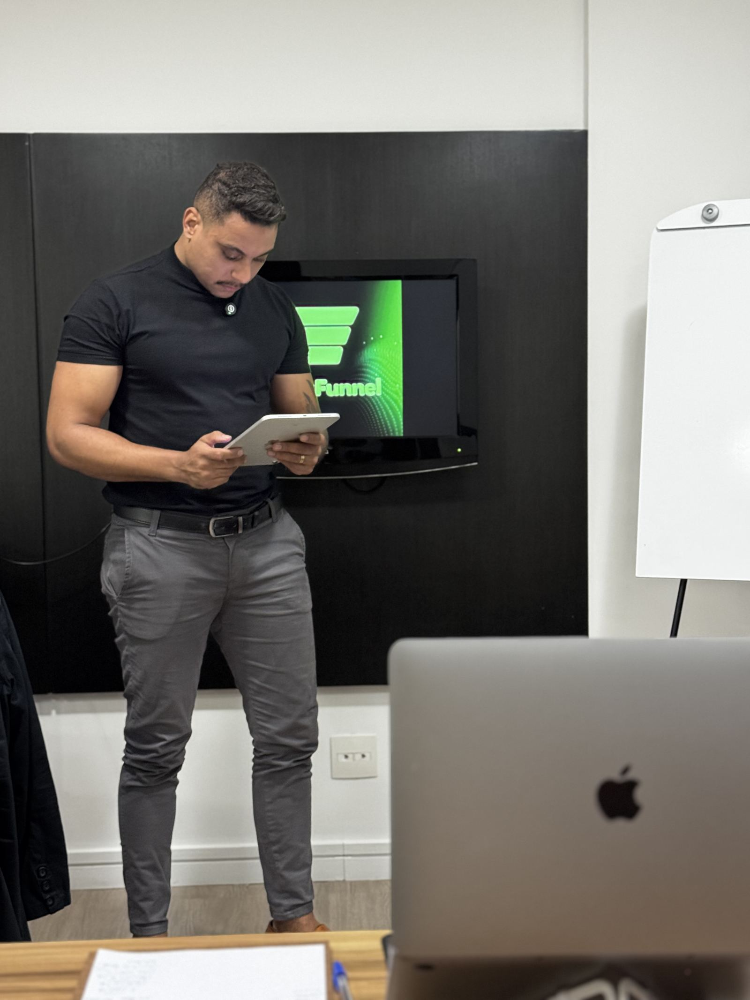
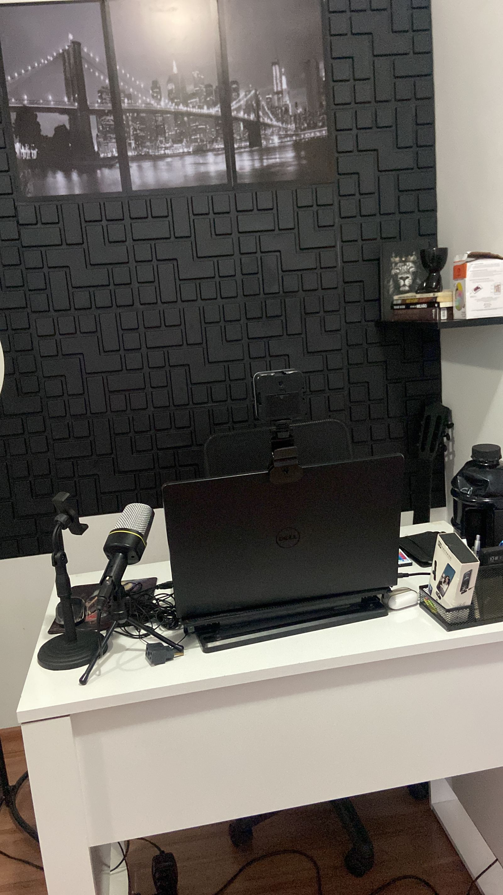
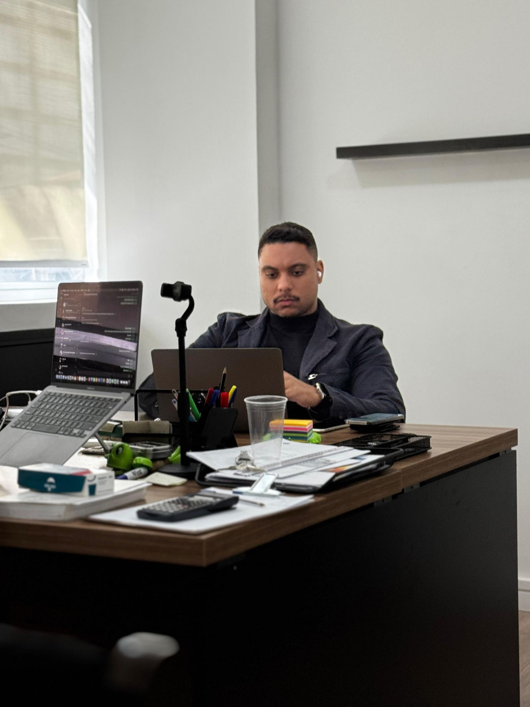
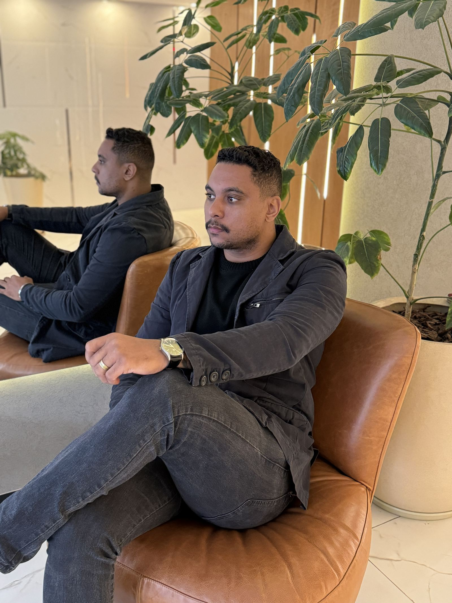
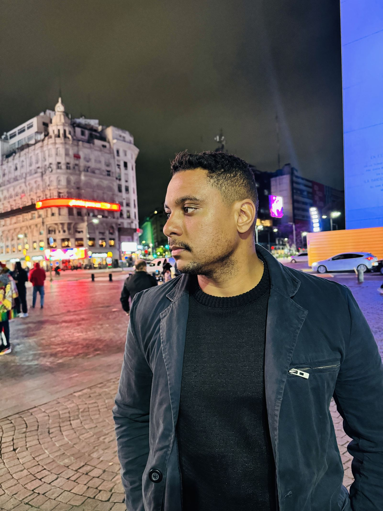
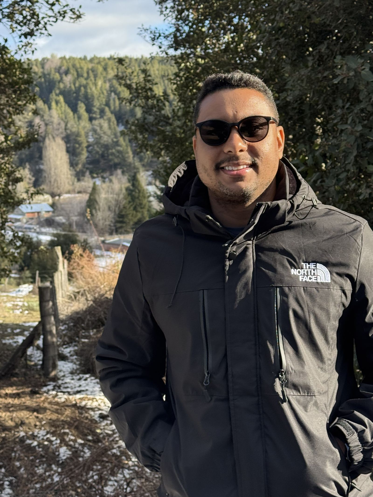

O Método Operação Livre ensina você a sair da CLT e construir uma operação regional, enxuta e previsível, que continua funcionando mesmo quando você não está na frente do computador.


O problema não é vender mais.
Uma operação construída sobre quatro pilares: é isso que permite crescer sem depender exclusivamente de você.
Pare de tentar conquistar o Brasil inteiro. Torne-se referência na sua cidade, mais rápido, mais barato e com oportunidades presenciais.
Uma agência não cresce só fechando contrato: cresce mantendo contrato. Aumente o LTV e transforme clientes em parceiros de longo prazo.
Existe faturamento escondido na sua carteira atual. Aumente o ticket médio sem parecer que está só tentando vender mais.
Contrate parceiros sem montar estrutura pesada. Use ferramentas que reduzem a dependência do gestor no dia a dia.
Conteúdo gravado + aplicação prática, do jeito que Eduardo estruturou a própria operação.
A virada de chave antes de qualquer processo: pensar como dono de operação, não como freelancer.
Como conquistar clientes da sua região sem depender só de tráfego pago.
Alinhar expectativa, estruturar reuniões e aumentar o tempo de vida de cada cliente.
Identificar necessidades e ampliar contratos naturalmente, sem parecer venda forçada.
Como contratar parceiros e delegar entregas sem virar refém da própria estrutura.
Organização, CRM, tarefas e financeiro: o esqueleto que sustenta o crescimento.
Construir reconhecimento local: conteúdo, presença e relacionamento na sua cidade.
A transição segura: sair do emprego sem trocar um problema por outro.


Criador do Método Operação Livre. Depois de viver a rotina de tocar agência fora do horário de trabalho, Eduardo estruturou o próprio jeito de operar (regional, enxuto e organizado) e hoje ensina gestores e donos de pequenas agências a fazer o mesmo.
Além do conteúdo gravado, Eduardo acompanha de perto quem está implementando: análise da operação, revisão de processos e bastidores reais em encontros ao vivo.


Não porque perdeu clientes. Mas porque todos sabem o que fazer: os planejamentos foram enviados, os parceiros conhecem os prazos, os clientes estão acompanhados.
Não. O método foi desenhado justamente pra quem está construindo a agência em paralelo à CLT e precisa de uma transição segura, não de um salto no escuro.
Sim. A lógica de autoridade regional funciona justamente por não depender de escala nacional: o foco é ser referência na sua própria cidade ou região.
Esse é exatamente o ponto do Pilar 4 (Operação): reduzir a dependência do gestor com processos, ferramentas e uma rede de parceiros.
São encontros semanais pra analisar sua operação, revisar processos e tirar dúvidas de implementação. Os detalhes de turma e formato são apresentados na conversa de diagnóstico.
O botão "Quero minha vaga" leva direto pro checkout seguro, onde você confere os detalhes e finaliza a inscrição.
Se essa é a operação que você quer construir, o Método Operação Livre foi criado pra você.
Quero minha vaga →